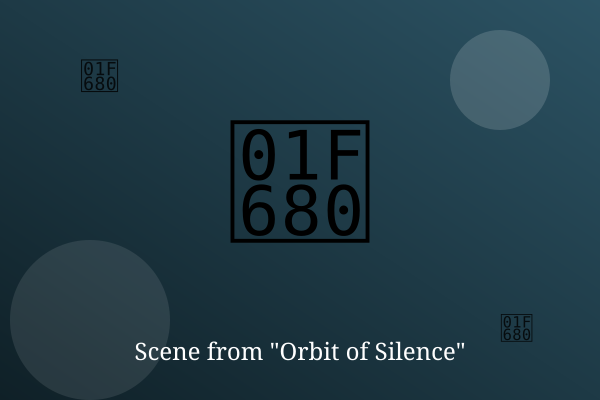

Chapter 1: Signal 7

Station Helios had been quiet for 212 days when the antenna began to hum. Engineer Mira Okoye checked the logs twice. Nothing was transmitting.
The signal repeated every seven seconds, and it was coming from inside the station's own hull.
Mira picked up a wrench and followed the sound down the dark corridor, one slow step at a time.
— End of Chapter —